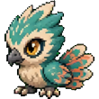

 Fire
Fire Wind
WindTap a stage to read its story.
Flickowl is a small teal-green owlet with one very large round eye set in a pale disc face, and soft feathers that graduate from teal-blue at the shoulders to warm orange at the wing-tips. It perches on the lower dragon spire ledges and swivels its head a full half-turn whenever a wind gust passes, tracking the sound with silent precision. At night it sits very still and blinks slowly, each blink sending a tiny ember-flicker from the orange feather-tips - local children call it the night-lantern owl and use it to light their way through the spire paths.
Field note: Flickowl blinks exactly once per minute at rest; if it blinks twice in quick succession, something is watching from above.
Dragon Spire. Flickowl and its family are found in the Dragon Spire. See everyone who lives there.
Share a Bond Food that matches its types to become friends. Flickowl loves:
A Bond Food is not a trick. It joins your spirit with the Kimuro's spirit, and only when it chooses you.
Print the Kimuro adventure packs: mazes, cards, a board game and Bond Mark medals.
See the printable packs